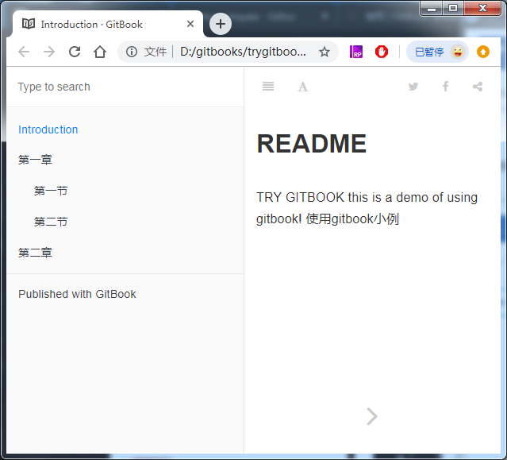

1、创建目录结构
如下：
trygitbook/
├── README.md
└── SUMMARY.md
README.md 是对书籍的简单介绍；
#README.md
this is a demo of using gitbook!
使用gitbook小例
SUMMARY.md 是书籍的目录结构；可以在SUMMARY.md中指定书籍的目录结构。
# Summary
* [Introduction](README.md)
* [第一章](di-yi-zhang.md)
* [第一节](di-yi-zhang/di-yi-jie.md)
* [第二节](di-yi-zhang/di-er-jie.md)
* [第二章](di-er-zhang.md)
2、初始化
在书籍目录下，执行gitbook init命令，会创建SUMMARY.m中指定的目录结构。
$ gitbook init
info: create di-yi-zhang.md
info: create di-yi-zhang/di-yi-jie.md
info: create di-yi-zhang/di-er-jie.md
info: create di-er-zhang.md
info: create SUMMARY.md
info: initialization is finished
创建的目录结构如下：
trygitbook/
├──di-yi-zhang
| ├──di-er-jie.md
| └──di-yi-jie.md
|
├──di-er-zhang.md
├──di-yi-zhang.md
├──README.md
└──SUMMARY.md
3、编译和预览
gitbook serve命令可以调用gitbook build命令来编译书籍，并运行一个web服务器，可以通过web服务器预览书籍。
$ gitbook serve
Live reload server started on port: 35729
Press CTRL+C to quit ...
info: 7 plugins are installed
info: loading plugin "livereload"... OK
info: loading plugin "highlight"... OK
info: loading plugin "search"... OK
info: loading plugin "lunr"... OK
info: loading plugin "sharing"... OK
info: loading plugin "fontsettings"... OK
info: loading plugin "theme-default"... OK
info: found 5 pages
info: found 2 asset files
info: >> generation finished with success in 0.5s !
Starting server ...
Serving book on http://localhost:4000
通过浏览器打开“http://localhost:4000” 即可预览书籍。
通过浏览器只能预览书籍，不能进行编辑；
只能通过修改文件，并重新执行gitbook serve 来编译和预览修改后的书籍。
gitbook build将书籍的内容输出为分章节html文件等，保存到当前目录下的_book目录中；可以通过html文件预览各个章节。
gitbook build <source_file> <target_file>
gitbook build命令默认的源文件目录是当前目录，默认的目标目录是当前目录下的_book目录。

- 但是通过浏览器直接打开静态文件，虽然章节是链接，点击却不能跳转！！！
要解决不能跳转的问题，需要修改_book/gitbook/theme.js
搜索js代码：
if(m)for(n.handler&&(i=n,n=i.handler,o=i.selector)
并将其改为
if(false)for(n.handler&&(i=n,n=i.handler,o=i.selector)
即可！！！
4、总结
以上是在本地创建、编译、预览数据的基础方法，但是使用不便；通常在本地操作书籍使用GitBook Editor进行操作。
如果网络允许，可以使用GitBook在线编辑书籍。